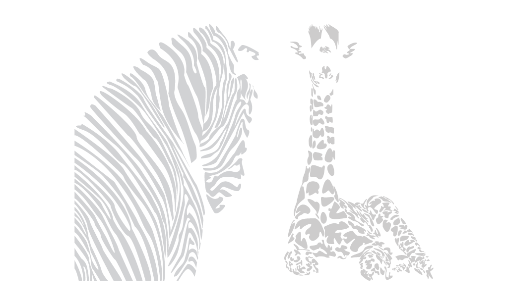

Art
concept, development, design
All designers need outlets, it allows you to express yourself in an unconstrained way and helps you look at the world in a conceptual and critical way. Luckily, my art allowed me to find graphic design and now they influence each other.
